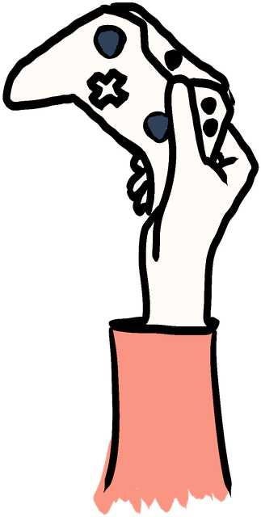
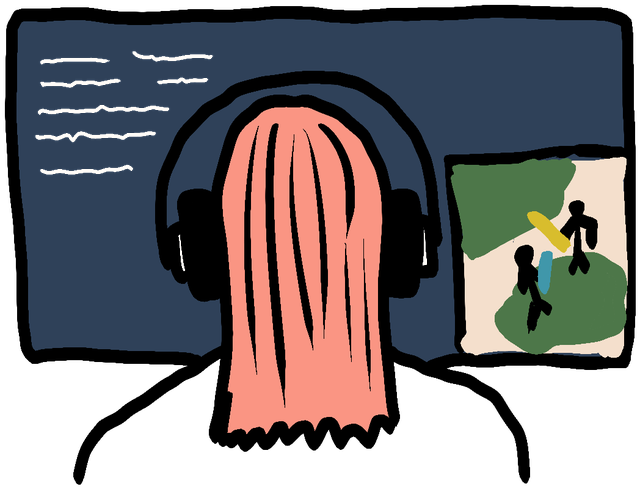
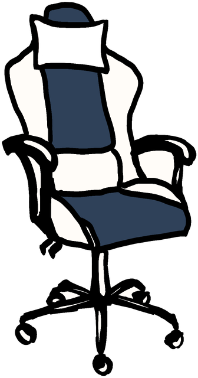

“The digital gaming industry has positioned itself as a poster child of the cultural and creative industries” (Szczepanska, 2023, p. 843). Video games combine technical skills with digital art, entertainment and different forms of media, in an industry focused on innovation, entrepreneurship and, as Szczepanska (2023) puts it, “meritocratic work ethic” (p. 843).
As Chaminade et al. (2021) explain, this industry has grown from a niche sector into a global mass market capable of producing high revenues around the globe (p. 132). But, beyond their economic significance, video games also play an important role in everyday life. Mortensen et al. (2018) describe video games as “process oriented media artifacts”, positioning them as “the central platform for everyday communication, extending regional to global social and economic relationships” (p. 64).
Sweden provides an interesting case study because its video game industry has experienced significant growth since the late 1990s, gaining international recognition through successful games such as Minecraft and Candy Crush (Chaminade et al., 2021, pp. 132; 135-136). We can see this growth in the development of regional gaming hubs as well, including Malmö and other parts of Southern Sweden, where universities and regional initiatives have supported the industry (Chaminade et al., 2021, pp. 135-136).
Despite Sweden's reputation as one of the world's most gender-equal countries, gender inequalities persist within its video game industry. Szczepanska (2023) stresses the contradiction between the industry's progressive image and the structural inequalities that continue to shape gender representation in it (pp. 843-846). This raises questions about whether the industry's growth has translated into important progress towards gender equality. And so, our project investigates:
How has women's representation in the Swedish video game industry changed between 2015-2025, and what does data reveal about progress towards gender equality?
1Women in culture: what do the numbers tell us?
In 2019, in an interview to the Guardian discussing the barriers women face in the gaming industry, Siobhan Reddy, studio director at Media Molecule, made the point that“The gaming industry isn't a separate satellite”, but rather a “microcosm that’s fed by wider culture”
The culture we create, and are a part of, reflects the society we live in. From the movies we watch and the music we listen to, to the video games we play, culture shapes how we perceive the world. But who gets to work in the industries that produce it?
We look at the period from 2015 to 2025, beginning the year after GamerGate brought issues of sexism and harassment in gaming into wider public discussion. This gives us a decade to explore how women's representation in the Swedish gaming industry has changed since then (Qvist, 2014).
In Sweden, the gap between men and women working full-time in the cultural sector has gotten smaller over the past decade. In 2015, 76.1% of men in cultural employment worked full-time, compared with 65.4% of women. By 2025, the difference lowered to 3% from 10.7% (Eurostat, n.d.).
About this data
What it shows well
- Comparable over time, from an established source (EU-LFS).
- A broad definition of cultural employment, including non-cultural roles in cultural organisations.
- Can be broken down by sex.
What it hides
- Eurostat's codes decide what counts as culture, so some activities fall outside.
- Only the main job counts, so freelance work is often invisible.
- Video games are mixed in with very different industries.
- Anyone who worked one paid hour in the reference week counts as employed.
But what can these numbers really tell us about greater gender equality over the years? The Eurostat's definition of cultural employment is a broad one, covering a wide range of industries and occupations, from artists to people working in non-cultural roles within cultural organizations (Eurostat, n.d.). This gives us a comprehensive picture of the sector, however it can also hide differences between specific industries. On top of that, even though the gap in full-time employment has attenuated, the numbers are not capable of telling us if women and men have access to equal pay, job security or opportunities.
To understand what gender equality looks like in a specific creative industry, we need to look a bit closer. So, what happens when we zoom in on the Swedish video game industry?

2Who plays the games?
“In order to attract more women to the industry, more girls must be allowed to keep their interest in video games and the joy of gaming when they grow up.”
This is how the Swedish Games Industry, the trade organisation behind the Game Developer Index, described the problem in 2020 (Swedish Games Industry, 2020, p. 15). The statement draws a direct line between who plays games today and who will make them tomorrow. So who actually plays?
At first glance, the answer challenges the idea of gaming as a “boys’ thing”. According to the industry’s latest report, 52% of players aged 16 and over in Sweden are women, 48% are men, and less than 1% selected non-binary or preferred not to say (Swedish Games Industry, 2025, p. 45). Across Europe, 45% of all players are women (Video Games Europe, 2025a, p. 9). Yet, as we saw earlier, women make up only 23.5% of the people employed in the Swedish games industry, against 76.3% men (Swedish Games Industry, 2025, p. 22). Half of those who play, less than a quarter of those who make.
About this data
What it shows well
- Both numbers come from the same report, so they are easy to trace.
- The player figure is based on 1,016 respondents in Sweden.
- The player survey offered an option beyond women and men.
What it hides
- A survey (players, 2025) is compared with company accounts (employees, 2024).
- "Player" means anyone who plays one hour a week, on any device.
- The survey was run for industry trade associations.
- Gender reporting is not mandatory for small companies; freelancers are not counted.
But who counts as a player? The Swedish figure comes from Power of Play 2025, a survey of more than 24,000 players in 21 countries, of whom 1,016 lived in Sweden (Swedish Games Industry, 2025, p. 45). It was conducted by the research firm AudienceNet and released by a group of games industry trade associations, among them Video Games Europe (Video Games Europe, 2025b). The survey counts as an active player anyone who plays at least one hour per week, on any device, and in Sweden the most played genre is puzzle games (Swedish Games Industry, 2025, p. 45). By this definition, someone solving a mobile puzzle on the bus and someone playing console games every evening fall into the same category. The near equal gender balance among players is therefore partly a product of how wide the category is drawn.
Public data on young people tells a different story. In its latest survey of children’s media use, the Swedish Media Authority reports that boys “still play considerably more than girls” (Mediemyndigheten, 2025, p. 14; our translation). When looking at those who play digital games for more than three hours on a typical day, the gap is clear in every age group: 38% of boys against 18% of girls aged 9 to 12 and 13 to 16, and 38% against 13% among 17 to 18 year olds (Mediemyndigheten, 2025, p. 66). Earlier data from Internetstiftelsen (2017) showed a similar pattern among teenagers, while among adults aged 36 to 55, women played daily slightly more often than men. If, as the industry itself suggests, the interest built in the teenage years shapes who later enters the profession, these numbers point to a pipeline that is still far from balanced.
About this data
What it shows well
- A public survey, sampled and collected by Statistics Sweden.
- Random sample from the population register, weighted for non-response.
- The same question in 2022 and 2024, covering all devices.
What it hides
- Only about one in four invited children answered.
- Only boys and girls; no other option.
- The 3-hour threshold measures intensity, not interest, and time is self-reported.
- Nothing here follows children into jobs.
These figures also say something about who does the counting. The headline number of players comes from trade associations, which have an interest in presenting games as mainstream culture for everyone. The public figures, on the other hand, rely on a survey where only around one in four invited children responded (Mediemyndigheten, 2025, p. 25). Both sort people into binary categories, and the industry survey groups non-binary identities together with “prefer not to say” (Swedish Games Industry, 2025, p. 45). Quantification starts with agreeing on conventions and only then measuring (Desrosières, 2015, pp. 332-333); here, the convention of what counts as “playing”, whether one hour a week or three hours a day, shapes the result. And none of these datasets can tell us why an audience that is close to gender balanced has not produced a balanced workforce.
So if women make up around half of those who play, why do they remain less than a quarter of those who make the games?

3Who makes the games?
As a way of looking into employment, we used two occupational categories from Statistics Sweden (SCB): 2173 Game and digital media designers, and 2513 Games and digital media developers. These codes cover roles in areas like game graphics, design and programming. We focused on these categories because they are also used in the Game Developer Index to track employment in roles related to game development (Swedish Games Industry, 2025, p. 19).
However, we must mention that these do not represent everyone that works in the video game industry. In fact, some people working in game development may fall under other occupational codes, and people classified as game and digital media designers may work in other industries as well, for example film or web design. Because of that, the numbers below should be understood more as an indication of employment in some game-related occupations, rather than a complete count of the gaming workforce.
Between 2015 and 2024, the number of men employed in game and digital media occupations in Sweden increased from 3,479 to 7,081. As we can see below, the number of women also grew, from 795 to 2,252. So, women’s employment (almost) tripled over the period, yet they remained a clear minority of the workforce (Statistics Sweden, n.d.-c, n.d.-d, n.d.-e).
About this data
What it shows well
- Official national statistics from Statistics Sweden (SCB), broken down by sex.
- A standard occupational classification (SSYK 2012), the same codes the Game Developer Index uses.
- A yearly series from 2015 to 2024.
What it hides
- Codes 2173 and 2513 do not cover everyone in games, and include people working in film or web design.
- Methodological changes in 2022 and 2023 (age range 16 to 64 became 16 to 69, some occupations estimated) affect comparability.
- Freelancers, consultants and self-employed people are not included.
- Headcounts say nothing about roles, seniority or leadership.
While the numbers are capable of showing progress, they lack when trying to make a case for a fundamental shift in the gender balance. As the industry grew over the years (Chaminade, 2021, p. 132), employment increased for both men and women. This suggests that growth alone did not eliminate the gender imbalances, even though women’s employment increased. This complicates the idea that a larger industry will automatically create greater representation.
But representation is only one part of the picture. What about pay?
4What about pay?
Among game and digital media developers, men earned more than women in most of the years. This gap wasn’t constant though. It narrowed in some years, particularly around 2019-2020, having remained visible in 2024 and 2025. In 2025, the average monthly salary was 56,400 SEK for men and 51,600 SEK for women (Statistics Sweden, n.d.-a, n.d.-b).
About this data
What it shows well
- Official salary statistics from SCB, by occupation and sex.
- Uses the same occupation code as Fig. 4, so pay and employment can be read together.
- Covers every year from 2015 to 2025.
What it hides
- Averages hide how salaries are spread within each group.
- It does not show whether men and women have the same roles, seniority, contracts or opportunities.
- The series comes from two SCB tables (2015 to 2022 and 2023 to 2025), so read the step between 2022 and 2023 with care.
- The code includes developers outside the games industry.
The picture is less consistent among designers. As we can see in the visualization below, in some years, women's average salary was close to or even higher than men's, while in 2025 the difference was much larger: 51,900 SEK for men compared with 42,700 SEK for women (Statistics Sweden, n.d.-a, n.d.-b). However, we must note that data concerning male salary is missing for 2021 and 2022. This means these years can’t be used to establish a continuous trend.
About this data
What it shows well
- Official salary statistics from SCB, by occupation and sex.
- Shows that the gap is not constant: in some years women earned as much as or more than men.
What it hides
- Men's salaries are missing for 2021 and 2022 (unavailable, too uncertain or withheld for confidentiality), so there is no continuous trend.
- Missing values suggest small groups, which makes averages less stable.
- It does not show roles, seniority, contracts or opportunities.
- The series comes from two SCB tables, and the code includes designers outside games.
To us, no data is still data, and the gaps in it matter. For that reason we find it relevant to mention that the employment numbers are affected by a methodological shift in 2022 and 2023, including a change in the age range and statistical estimation of some occupations (Statistics Sweden, n.d.-e). The salary info, meanwhile, does not tell us whether men and women have the same roles, seniority, contracts or opportunities.
So the numbers can show that women are entering the industry in greater numbers, and that differences in average pay remain. But we still face an issue we have seen before: the numbers cannot tell us why these differences exist. Research on the Swedish games industry, conducted by Anna Szczepanska (2023), points towards one possible explanation. Although this industry often presents itself as meritocratic, where creativity, talent and passion are seen as important, recruitment can also rely on informal networks. In her article, she argues that “informal recruitment strategies and the formulation of merits may privilege men” (p. 857). Szczepanska (2023) also mentions that the industry's idea of “passion” can become “conflated with merit”, potentially helping reproduce existing gender inequalities (pp. 843, 855-857).
Her research does not prove that these mechanisms explain the differences in our data. Nonetheless, we dare to say that it sure helps to highlight what the numbers alone cannot capture. Employment statistics can show how many women enter the industry, and salary data can reveal differences in average earnings. Still, neither tells us much about the experiences, recruitment practices or working conditions behind these figures. On top of that, missing values and changes in methodology further influence which comparisons we can make.
Ultimately, this raises a bigger question about how we measure gender equality. If we only look at employment numbers and average salaries, we might think we got everything figured out, when, in reality, we're only actually seeing part of the picture. In that sense, the numbers help us identify patterns, but we also need to look beyond them and ask what is happening behind those patterns. If games reflect the culture around us, then it matters not only who makes them, but also who gets the opportunity to do so.
5Behind the Game Developer Index
Beyond employment and salary figures, understanding gender representation also means looking at how the gaming industry attempts to address the imbalance and how its progress is measured. The Game Developer Index provides good insights into the industry’s development in Sweden, but what does it actually tell us about gender equality?
In 2015, women accounted for 651 employees, representing 18% of the reported workforce in Sweden. By 2024, this had increased to 2150 women, or 23.5% of employees (Swedish Games Industry, 2020, p. 15; Swedish Games Industry, 2025, p. 67). These numbers suggest that women's representation in the Swedish gaming industry has increased. But it is important to distinguish between growth in the number of women employed and growth in their share of the workforce. In 2025, the picture didn't change much, as women made up 25.2% of employees in member companies, suggesting a further increase in representation (Dataspelsbranschen, 2026, p. 25).
About this data
What it shows well
- The industry's own yearly count of women and men since 2014.
- Specific to games companies, unlike broader occupational statistics.
What it hides
- Uses the average number of full-time employees over the year, not the number at year end, and excludes some subsidiaries and business offices (Swedish Games Industry, 2021, p. 12).
- Many companies do not publish employee information (Swedish Games Industry, 2021, p. 16).
- Up to 2019 the figures include staff abroad; from 2020 Sweden only. Earlier years also change between reports (2018: 1,699 women in the 2019 Index, 1,036 in the 2021 Index).
- Published by a trade association; studios outside it, freelancers and consultants may be missing, and there is no data on leadership or pay.
The industry has argued that, to attract more women into game development, more girls need to stay interested in video games as they grow up (Swedish Games Industry, 2020, p. 16). However, the Game Developer Index 2025 reports that in 2024 women make up 52% of players in Sweden, while accounting for only 23.5% of the gaming workforce (Swedish Games Industry, 2025, pp. 22, 45).
This contrast raises an important question: if women already represent around half of players, is maintaining their interest in gaming enough to explain their underrepresentation? The numbers cannot explain why this gap exists, but it suggests that we need to look beyond gaming participation and consider other factors that influence women's entry into the industry.
From the report of 2020 we can find information about several initiatives that try to encourage women's participation in the gaming industry.
Games by Her
Games by Her offers a course for women and non-binary people who want to learn about the industry.
Leveling the Playing Field
Leveling the Playing Field, an initiative by Coffee Stain, supports smaller studios that employ at least as many women as men.
King and Swedish Games Industry mentorship
More recently, King and the Swedish Games Industry introduced a mentorship program for women and non-binary participants, offering mentoring, events and networking opportunities (Swedish Games Industry, 2020, p. 16; Swedish Games Industry, 2024, p. 24).
These initiatives demonstrate efforts to address the gender imbalance. However, their existence alone does not show whether they have increased women's employment or improved their opportunities to progress within the industry.
Gaps in publicly available information also affect the reliability of the workforce data. The Game Developer Index 2021 notes that although listed companies must report this information in their annual accounts, many small, medium-sized, and even large companies do not include it in their annual reports or on their websites (Swedish Games Industry, 2021, p. 16). This raises questions about how completely women's representation can be measured across the industry. Missing information may leave the statistics incomplete, limiting our ability to assess progress towards gender equality. Freelancers and subcontractors may also be missing from the reported employee counts (Swedish Games Industry, 2020, p. 9).
Considering who or what is behind the production of these numbers and reports is also important. From our research we gathered that the Game Developer Index is published by the Swedish Games Industry, a trade association that represents companies in the sector and is funded partly through membership fees. This doesn’t necessarily mean that the data is unreliable, but it is worth considering the position from which it is produced. As an organization that represents the interests of the games industry, its reports aim, in the first place, to provide an overview of the sector's development. This means that the numbers should also be understood in the context of how the industry chooses to measure and present itself.

6What gets counted, and what doesn't
Across all our sources, some things are measured every year, some only once, and some never. What gets counted shapes what we can know.
Counted every year
- Women and men employed in games companies
- Women and men in game occupations (SCB)
- Average salaries by sex (SCB), with gaps
Counted now and then
- Players' gender in Sweden (2025 only)
- Teen gaming time by gender (every two years, changing measures)
- Non-binary or other gender (sometimes, under 1 to 2%)
Not counted
- Women in leadership positions
- Freelancers, consultants and subcontractors
- Workplace culture, harassment and who leaves
- Why the differences exist
So, while the reports (and our other sources) offer valuable insights into employment and industry growth, they are not designed to provide a complete assessment of gender equality or the experiences of people working within it. And, this raises an important question: whose perspectives and experiences are represented in these statistics, and whose might be left out? The truth is we don’t know, and that is why, ultimately, understanding gender equality requires looking not only at what the numbers show, but also at who produces them, what they are designed to measure and what falls outside their scope.
Critical reflection
In the assignment support on canvas was a question that stuck with us and inspired a final reflective note for the present report:
If the data in your case suddenly disappeared, how would people in this cultural sector make decisions differently?
This led us to reflect on how the Swedish gaming industry might look without the statistics we have been researching. Without data, the gender inequality present in the sector could become harder to identify, as companies and policymakers would have less evidence to recognize the disparities and assess if their initiatives are actually making a difference.
Plus, our research also showed that having data does not automatically lead to change. Numbers can make inequalities visible, but they are shaped by how information is collected, what is measured, and what is left out. We found missing values, methodological changes and differences, and even other limitations that made us question how complete the picture really is. This made us comprehend that data is not simply a reflection of reality, but also a way of choosing which parts of reality become visible.
Ultimately, we believe that data is essential for identifying and combating inequality, but it should never be seen as the whole story. Even because, yes, numbers can show us where inequalities exist, but it's up to people to understand why they exist and take responsibility for changing them.
Design choices
Our design choices were guided by three principles that good data visualization should be trustworthy, accessible and elegant (Kirk, 2019, p. 38). We built the charts in Flourish, so readers of our digital article can hover over values and explore the data themselves, and we kept to familiar chart types: bars for comparisons, lines for change over time. Bars always start at zero, and lines connect only years for which data exists.
For colour, we aimed to “establish meaning first and worry about decoration last” (Kirk, 2019, p. 249), using colour for data legibility (Kirk, 2019, p. 252). The same colour always represents the same group: coral for women and girls, navy for men and boys, and grey for missing values. Aware that pink and blue reproduce gender stereotypes (Muth, 2018, para. 6), we avoided pastel tones, while acknowledging that a warm and cool pairing still echoes this convention.
We checked all colours against WCAG 2.2, which requires a contrast ratio of at least 3:1 for graphical elements and 4.5:1 for text, and states that colour should never be the only way of conveying information (W3C, 2024). We therefore darkened our original coral, tested the palette for colour vision deficiency, and added direct labels to every chart.
Also, data, “if properly contextualized, can be an incredibly powerful tool to write more meaningful and intimate narratives” (Lupi, 2017, para. 21). Each chart therefore shows its source and notes on definitions and methodological breaks directly on the visual, so readers see the data’s limitations where the numbers are.
References
- Chaminade, C., Martin, R., & McKeever, J. (2021). When regional meets global: exploring the nature of global innovation networks in the video game industry in Southern Sweden. Entrepreneurship & Regional Development, 33(1-2), 131-146. https://doi.org/10.1080/08985626.2020.1736184
- Dataspelsbranschen. (2026, April 29). Annual report 2025. https://www.dataspelsbranschen.se/rapporter/annual-report-2025/
- Desrosières, A. (2015). Retroaction: How indicators feed back onto quantified actors. In R. Rottenburg, S. E. Merry, S.-J. Park, & J. Mugler (Eds.), The world of indicators: The making of governmental knowledge through quantification (pp. 329-353). Cambridge University Press.
- Eurostat. (n.d.). Cultural employment by sex (cult_emp_sex). https://doi.org/10.2908/CULT_EMP_SEX
- Internetstiftelsen. (2017). Svenskarna och internet 2017: Spel, sex och dejting. https://svenskarnaochinternet.se/rapporter/svenskarna-och-internet-2017/spel-sex-och-dejting/
- Judge, A. (2019, October 14). LittleBigPlanet creator on championing women in the games industry post Gamergate. The Guardian. https://www.theguardian.com/careers/2019/oct/14/littlebigplanet-creator-on-championing-women-in-the-games-industry-post-gamergate
- Kirk, A. (2019). Data visualisation: A handbook for data driven design (2nd ed.). SAGE Publications.
- Lupi, G. (2017). Data humanism: The revolution will be visualized. Print. https://giorgialupi.com/data-humanism-my-manifesto-for-a-new-data-wold
- Mediemyndigheten. (2025). Ungar & medier 2025. https://mediemyndigheten.se/globalassets/rapporter-och-analyser/ungar--medier/mediemyndigheten-rapport-ungar-och-medier.pdf
- Mortensen, T., Witkowski, E., & Toft-Nielsen, C. (2018). Introduction to Special Issue: Media-ludic approaches: Critical reflections on games and research practice. MedieKultur: Journal of Media and Communication Research, 34(64), 1-9. https://doi.org/10.7146/mediekultur.v34i64.105913
- Muth, L. C. (2018, July 10). An alternative to pink & blue: Colors for gender data. Datawrapper. https://www.datawrapper.de/blog/gendercolor
- Qvist, B. (2014, December 18). Gamergate: Swedish gaming companies tackle sexism in video games. The Guardian. https://www.theguardian.com/sustainable-business/2014/dec/19/gamergate-swedish-gaming-companies-tackle-sexism-in-video-games
- Statistics Sweden. (n.d.-a). Average monthly salary by occupation (SSYK 2012), region and sex (year 2014-2022). https://www.statistikdatabasen.scb.se/pxweb/en/ssd/START__AM__AM0110__AM0110A/LonYrkeRegion4A/
- Statistics Sweden. (n.d.-b). Average monthly salary by occupation (SSYK 2012), region and sex (year 2023-2025). https://www.statistikdatabasen.scb.se/pxweb/en/ssd/START__AM__AM0110__AM0110A/LonYrkeRegion4AN/
- Statistics Sweden. (n.d.-c). Employees by occupation (SSYK 2012), region and sex (year 2014-2018). https://www.statistikdatabasen.scb.se/pxweb/en/ssd/START__AM__AM0208__AM0208E/YREG50/
- Statistics Sweden. (n.d.-d). Employees by occupation (SSYK 2012), region and sex (year 2019-2021). https://www.statistikdatabasen.scb.se/pxweb/en/ssd/START__AM__AM0208__AM0208E/YREG50N/
- Statistics Sweden. (n.d.-e). Employees by occupation (SSYK 2012), region and sex (year 2020-2024). https://www.statistikdatabasen.scb.se/pxweb/en/ssd/START__AM__AM0208__AM0208E/YREG50BAS/
- Swedish Games Industry. (2020, December). Game developer index 2020 (2nd ed.). https://www.dataspelsbranschen.se/rapporter/swedish-games-industry-2020-game-developer-index/
- Swedish Games Industry. (2021). Game developer index 2021. https://www.dataspelsbranschen.se/rapporter/swedish-games-industry-2021-game-developer-index/
- Swedish Games Industry. (2024). Game developer index 2024. https://www.dataspelsbranschen.se/rapporter/swedish-games-industry-2024-game-developer-index/
- Swedish Games Industry. (2025). Game developer index 2025. https://www.dataspelsbranschen.se/wp-content/uploads/2026/01/Game-Developer-Index-2025-ENG-WEB.pdf
- Szczepanska, A. M. (2023). Women's inclusion and neoliberal governmentality in the Swedish digital game industry: An analysis of discursive positions and recruitment strategies. Gender, Work & Organization, 30(3), 842-861. https://doi.org/10.1111/gwao.12923
- Video Games Europe. (2025a). All about video games: European key facts 2024. https://vge.project-n.com/payload-api/media/file/VGE-2024-Key-Facts-Report_102025-1.pdf
- Video Games Europe. (2025b, October 8). Global report: Video games transcend entertainment and affect positive change in players’ lives. https://videogameseurope.eu/news/global-report-video-games-transcend-entertainment-and-affect-positive-change-in-players-lives/
- W3C. (2024). Web content accessibility guidelines (WCAG) 2.2. https://www.w3.org/TR/WCAG22/